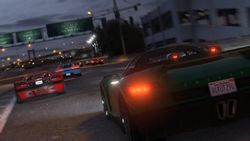

Races zijn een soort game-modus beschikbaar zijn in Grand Theft Auto Online . Ze kunnen alleen of met maximaal 15 (29 in verbeterde versie PS4, XB1 en PC) andere spelers worden afgespeeld. Races geven de speler beloningen, zoals JP , RP en contant geld , zelfs als de speler de race niet wint. Er zijn vier verschillende race-modi: Land Races, Air Races, Water Races, Bike Races, en Stunt Races
Er zijn ook Impromptu Races die kunnen worden geactiveerd op elk moment tijdens Free Mode .
Het Land Races zijn onderverdeeld in drie verschillende types: Standard (Lap en Point to Point), GTA (Lap en Point to Point) en Rally. Standard Lap en Point to Point impliceert spelers rijden door verschillende checkpoints in het spoor voor het bereiken van de finish. Standard Lap races betrekken herhaalde getimede rondjes rond een ingestelde koers en Point-to-races vanaf een beginpunt naar een aparte eindpunt Punt. GTA races zijn in wezen dezelfde als Standard / Point to Point, maar met wapens en power-ups ingeschakeld. De spelers kunnen ook verlaten hun eerste voertuig en stelen een andere. Rally is een uniek team-based formaat waarin er twee spelers in elk voertuig, de bestuurder en de navigator. De bestuurder is niet in staat om de checkpoints in de race te zien, zodat de navigator moet de bestuurder rechtstreeks door de punten, ofwel met directionele commando's of spraakopdrachten met behulp van hun microfoon.
Er waren 42 unieke Rockstar-races gemaakt aan het begin van GTA Online. Na verloop van tijd, Rockstar Games zal blijven downloadbare content packs die nieuwe rassen kan bevatten vrijgeven. Er zijn een bijna eindeloze hoeveelheid-speler gemaakt races die kan soms zelfs worden officieel door Rockstar Games goedgekeurd; deze staan bekend als Rockstar-Verified races.
A Non-Contact optie Race werd toegevoegd in The High Life-update , die het mogelijk maakt spelers om standaard races te spelen met botsingen uitgeschakeld tussen voertuigen speler (andere spelers verschijnen als semi-transparante "ghosts"), maar spelers zijn nog steeds in staat te botsen met non-player verkeer, structuren en andere landschappen. Slipstream wordt automatisch uitgeschakeld in non-contact races.
